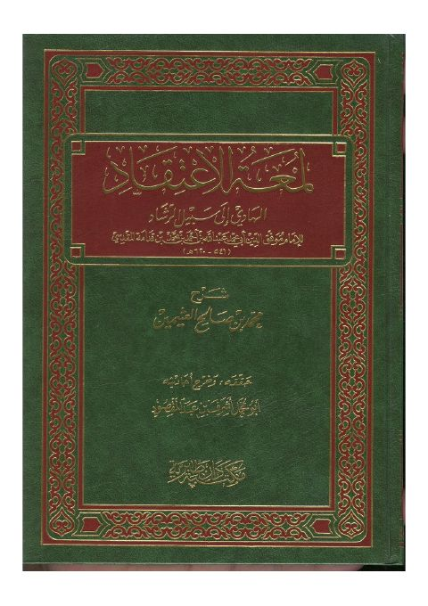
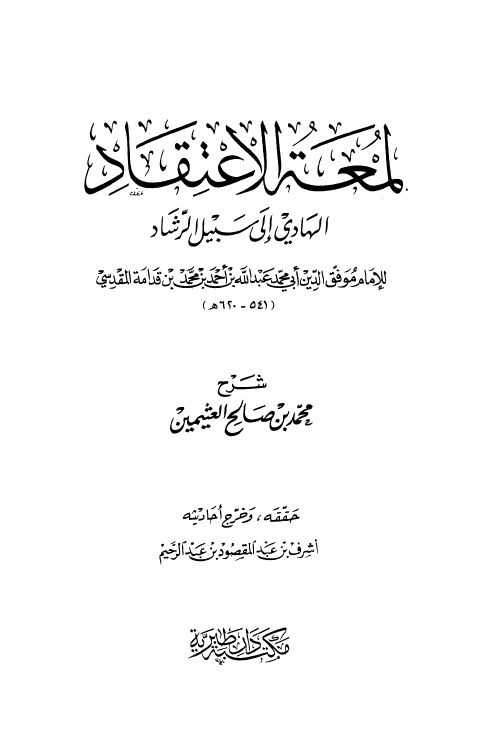
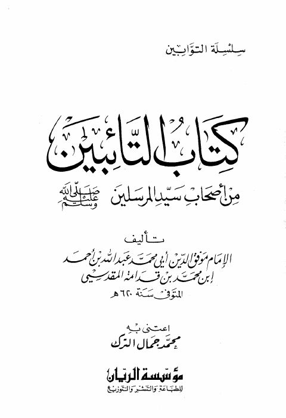

عبد الله بن قدامة المقدسي
Author
Resources
 روضة الناظر وجنة المناظر في أصول الفقه على مذهب الإمام أحمد بن حنبل- المكتبة المكية
روضة الناظر وجنة المناظر في أصول الفقه على مذهب الإمام أحمد بن حنبل- المكتبة المكية
موفق الدين عبد الله بن أحمد بن قدامة
روضة الناظر وجنة المناظر في أصول الفقه على مذهب الإمام أحمد بن حنبل- المكتبة المكية
روضة الناظر وجنة المناظر في أصول الفقه على مذهب الإمام أحمد بن حنبل- المكتبة المكية
موفق الدين عبد الله بن أحمد بن قدامة

لمعة الاعتقاد الهادي إلى سبيل الرشاد لمعة الاعتقاد الهادي إلى سبيل الرشاد موفق الدين عبد الله بن أحمد بن قدامة المقدسي
شرح لمعة الاعتقاد- ط دار طبرية شرح لمعة الاعتقاد- ط دار طبرية ابن قدامه المقدسي • محمد بن صالح العثيمين
كتاب التائبين من أصحاب سيد المرسلين ﷺ كتاب التائبين من أصحاب سيد المرسلين ﷺ موفق الدين عبد الله ابن قدامة المقدسي